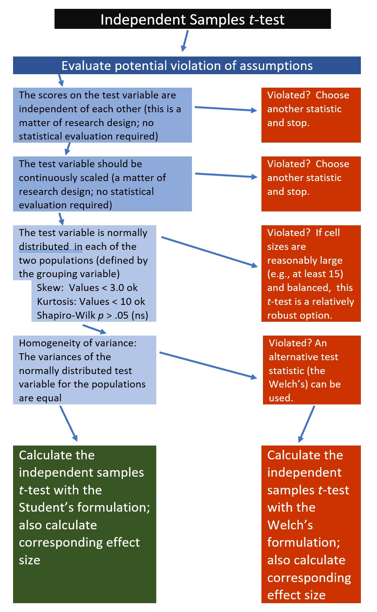
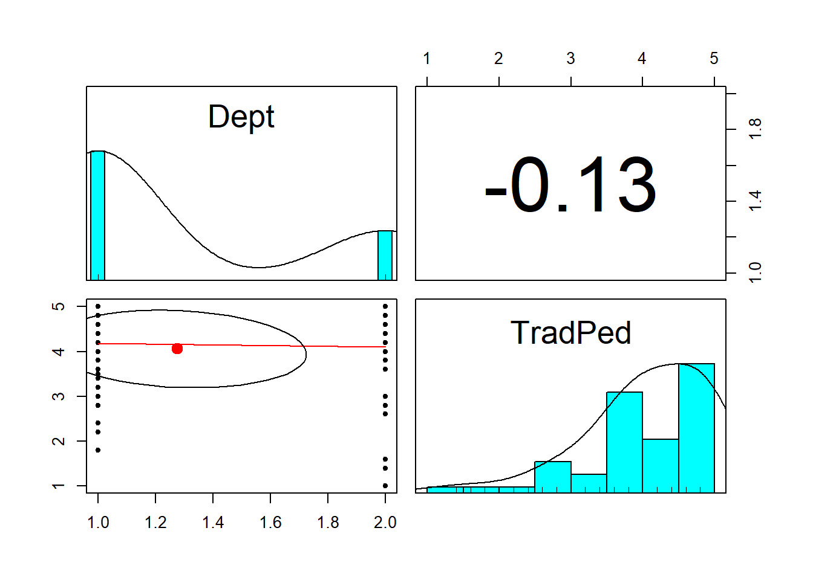
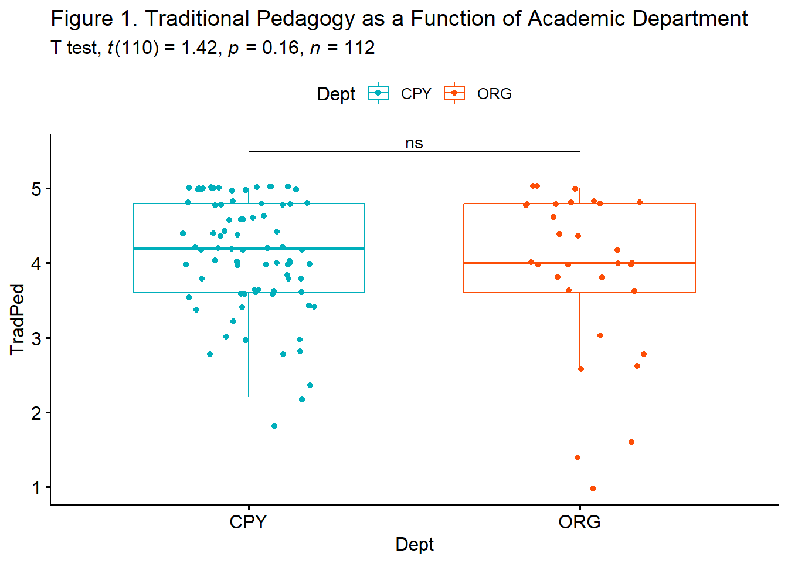

Chapter 5 Independent Samples t-test
Researchers may wish to know if there are differences on a given outcome variable as a result of a dichotomous grouping variable. For example, during the COVID-19 pandemic, my research team asked if there were differences in the percentage of time that individuals wore facemasks as a result of 2020 Presidential voting trends (Republican or Democratic) of their county of residence. In these simple designs, the independent samples t-test could be used to test the researchers’ hypotheses.
5.2 Introducing the Independent Samples t-Test
The independent samples t-test assesses whether the population mean of the test variable for one group differs from the population mean of the test variable for a second group. This t-test can only accommodate two levels of a grouping variable (e.g., teachers/students, volunteers/employees, treatment/control) and the participants must be different in each group.

The comparison of two means is especially evident in the numerator of the formula. In the denominator we can see that the mean difference is adjusted by the standard error. At the outset, you should know that the formula in the denominator gets messy, but the formula, alone, provides an important conceptual map.
\[t = \frac{\bar{X}_1 - \bar{X}_2}{\mbox{SE}}\] If the researcher is interested in comparing the same participants’ experiences across time or in different groups, they should consider using a paired samples t-test. Further, the independent samples t-test is limited to a grouping variable with only two levels. If the researcher is interested in three or more levels, they should consider using a one-way ANOVA.
5.2.1 Workflow for Independent Samples t-Test
The following is a proposed workflow for conducting a independent samples t-test.
 If the data meets the assumptions associated with the research design (e.g., independence of observations and a continuously scaled metric), these are the steps for the analysis of an independent samples t-test:
- Prepare (upload) data.
- Explore data with
- graphs
- descriptive statistics
- Assess normality via skew, kurtosis, and the Shapiro-Wilk test of normality
- Consider the homogeneity of variance assumption and decide whether to use the Student’s or Welch’s formulation.
- Compute the independent samples t-test
- Compute an effect size (frequently the d or eta statistic)
- Manage Type I error
- Sample size/power analysis (which you should think about first, but in the context of teaching statistics, it’s more pedagogically sensible, here).
5.3 Research Vignette
Empirically published articles where t-tests are the primary statistic are difficult to locate. Having exhausted the psychology archives, I located this article in an interdisciplinary journal focused on palliative medicine. The research vignette for this lesson examined differences in physician’s verbal and nonverbal communication with Black and White patients at the end of life (Elliott et al., 2016).
Elliott and colleagues (2016) were curious to know if hospital-based physicians (56% White, 26% Asian, 7.4% each Black and Hispanic) engaged in verbal and nonverbal communication differently with Black and White patients. Black and White patient participants were matched on characteristics deemed important to the researchers (e.g., critically and terminally ill, prognostically similar, expressed similar treatment preferences). Interactions in the intensive care unit were audio and video recorded and then coded on dimensions of verbal and nonverbal communication.
Because each physician saw a pair of patients (i.e., one Black patient and one White patient), the researchers utilized a paired samples, or dependent t-test. This statistical choice was consistent with the element of the research design that controlled for physician effects through matching. Below are the primary findings of the study.
| Black Patients | White Patients | ||
|---|---|---|---|
| Category | Mean(SD) | Mean(SD) | p-value |
| Verbal skill score (range 0 - 27) | 8.37(3.36) | 8.41(3.21) | 0.958 |
| Nonverbal skill score (range 0 - 5) | 2.68(.84) | 2.93(.77) | 0.014 |
Although their design was more sophisticated (and, therefore, required the paired samples t-test), Elliott et al. (2016) could have simply compared the outcome variables (e.g., verbal and nonverbal communication) as a function of their dichotomous variable, patient race (Black, White).
5.3.1 Data Simulation
In the data below, I have simulated the verbal and non-verbal communication variables using the means and standard deviations listed in the article. Further, I truncated them to fit within the assigned range. I created 33 sets each and assigned them to the Black or White level of the grouping variable.
set.seed(220815)
# sample size, M, and SD for Black then White patients
Verbal <- c(rnorm(33, mean = 8.37, sd = 3.36), rnorm(33, mean = 8.41, sd = 3.21))
# set upper bound
Verbal[Verbal > 27] <- 27
# set lower bound
Verbal[Verbal < 0] <- 0
# sample size, M, and SD for Black then White patients
Nonverbal <- c(rnorm(33, mean = 2.68, sd = 0.84), rnorm(33, mean = 2.93,
sd = 0.77))
# set upper bound
Nonverbal[Nonverbal > 5] <- 5
# set lower bound
Nonverbal[Nonverbal < 0] <- 0
ID <- factor(seq(1, 66))
# name factors and identify how many in each group; should be in same
# order as first row of script
PatientRace <- c(rep("Black", 33), rep("White", 33))
# groups the 3 variables into a single df: ID#, DV, condition
dfIndSamples <- data.frame(ID, PatientRace, Verbal, Nonverbal)With our data in hand, let’s inspect its structure (i.e., the measurement scales for the variables) to see if they are appropriate.
'data.frame': 66 obs. of 4 variables:
$ ID : Factor w/ 66 levels "1","2","3","4",..: 1 2 3 4 5 6 7 8 9 10 ...
$ PatientRace: chr "Black" "Black" "Black" "Black" ...
$ Verbal : num 2.76 5.73 6.81 8.68 9.1 ...
$ Nonverbal : num 3.41 4.02 1.62 2.52 2.11 ...The verbal and nonverbal variables are quasi-interval scale variables. Therefore, the numerical scale is correctly assigned by R. In contrast, patient race is a nominal variable and should be a factor. In their article, Elliot et al. (2016) assigned Black as the baseline variable and White as the comparison variable. Because R orders factors alphabetically, and “Black” precedes “White”, this would happen automatically. Because creating ordered factors is a useful skill, I will write out the full code.
Let’s again check the formatting of the variables:
'data.frame': 66 obs. of 4 variables:
$ ID : Factor w/ 66 levels "1","2","3","4",..: 1 2 3 4 5 6 7 8 9 10 ...
$ PatientRace: Factor w/ 2 levels "Black","White": 1 1 1 1 1 1 1 1 1 1 ...
$ Verbal : num 2.76 5.73 6.81 8.68 9.1 ...
$ Nonverbal : num 3.41 4.02 1.62 2.52 2.11 ...The four variables of interest are now correctly formatted as num and factor.
Below is code for saving (and then importing) the data in .csv or .rds files. I make choices about saving data based on what I wish to do with the data. If I want to manipulate the data outside of R, I will save it as a .csv file. It is easy to open .csv files in Excel. A limitation of the .csv format is that it does not save any restructuring or reformatting of variables. For this lesson, this is not an issue.
Here is code for saving the data as a .csv and then reading it back into R. I have hashtagged these out, so you will need to remove the hashtags if you wish to run any of these operations. If you have simulated the data (above), you do not need to save and then re-import the data.
# writing the simulated data as a .csv write.table(dfIndSamples, file
# = 'dfIndSamples.csv', sep = ',', col.names=TRUE, row.names=FALSE)
# at this point you could clear your environment and then bring the
# data back in as a .csv reading the data back in as a .csv file
# dfIndSamples<- read.csv ('dfIndSamples.csv', header = TRUE)The .rds form of saving variables preserves any formatting (e.g., creating ordered factors) of the data. A limitation is that these files are not easily opened in Excel. Here is the hashtagged code (remove hashtags if you wish to do this) for writing (and then reading) this data as an .rds file.
5.3.2 Quick Peek at the Data
Plotting the data is a helpful early step in any data analysis. Further, visualizing the data can help us with a conceptual notion of the statistic we are utilizing. The ggpubr package is one of my go-to-tools for quick and easy plots of data. Boxplots are terrific for data that is grouped. A helpful tutorial for boxplots (and related plots) can be found at datanovia.
In the code below I introduced the colors by identifying the grouping variable and assigning colors. Those color codes are the “Hex” codes you find in the custom color palette in your word processing program.
I am also fond of plotting each case with the command, add = “jitter”. To increase your comfort and confidence in creating figures (and with other tools) try deleting and adding back in different commands. This is how to distinguish between the essential and the elective elements of the code.
ggpubr::ggboxplot(dfIndSamples, x = "PatientRace", y = "Verbal", color = "PatientRace",
palette = c("#00AFBB", "#FC4E07"), add = "jitter") The box of the boxplot covers the middle 50% (the interquartile range). The horizontal line is the median. The whiskers represent three standard deviations above and below the mean. Any dots are outliers.
The box of the boxplot covers the middle 50% (the interquartile range). The horizontal line is the median. The whiskers represent three standard deviations above and below the mean. Any dots are outliers.
5.4 Working the Independent Samples t-Test (by hand)
5.4.1 Stating the Hypothesis
In this lesson, I will focus on differences in the verbal communication variable. Specifically, I hypothesize that physician verbal communication scores for Black and White patients will differ. In the hypotheses below, the null hypothesis (\(H_0\)) states that the two means are equal; the alternative hypothesis (\(H_A\)) states that the two means are not equal.
\[ \begin{array}{ll} H_0: & \mu_1 = \mu_2 \\ H_A: & \mu_1 \neq \mu_2 \end{array} \]
5.4.2 Calculating the t-Test
Earlier I presented a formula for the independent samples t-test.
\[t = \frac{\bar{X}_1 - \bar{X}_2}{\mbox{SE}}\] There are actually two formulations of the t-test. Student’s version can be used when there is no violation of the homogeneity of variance assumption; Welch’s can be used when the homogeneity of variance assumption is violated. For the hand-calculation demonstration, I will only demonstrate the formula in the most ideal of circumstances, that is: there is no violation of the homogeneity of variance assumption and sample sizes are equal.
Even so, while the formula seems straightforward enough, calculating the SE in the denominator gets a little spicy:
\[t = \frac{\bar{X_{1}} -\bar{X_{2}}}{\sqrt{\frac{s_{1}^{2}}{N_{1}}+\frac{s_{2}^{2}}{N_{2}}}}\] Let’s first calculate the SE – the value of the denominator. For this, we need the standard deviations for the dependent variable (verbal) for both levels of patient race. We obtained these earlier when we used the describeBy() function in the psych package.
The standard deviation of the verbal variable for the levels in the patient race group were 2.99 for Black patients and 3.20 for White patients; the N in both our groups is 33. We can do the denominator math right in an R chunk:
[1] 0.7621627Our SE = 0.762
With the simplification of the denominator, we can easily calculate the independent sample t-test.
\[t = \frac{\bar{X_{1}} -\bar{X_{2}}}{SE}\]
[1] -1.674541Hopefully, this hand-calculation provided an indication of how the means, standard deviation, and sample sizes contribute to the estimate of this t-test value. Now we ask, “But it is statistically significant?”
5.4.2.1 Statistical Significance
The question of statistical significance testing invokes NHST (null hypothesis significance testing). In the case of the independent samples t-test, the null hypothesis is that the two means are equal; the alternative is that they are not equal. Our test is of the null hypothesis. When the probability (p) is less than the value we specify (usually .05), we are 95% certain that the two means are not equal. Thus, we reject the null hypothesis (the one we tested) in favor of the alternative (that the means are not equal).
\[ \begin{array}{ll} H_0: & \mu_1 = \mu_2 \\ H_A: & \mu_1 \neq \mu_2 \end{array} \] Although still used, NHST has its critiques. Among the critiques are the layers of logic and confusing language as we interpret the results.
Our t-value was -1.675. We compare this value to the test critical value in a table of t critical values. In-so-doing we must know our degrees of freedom. In the test that involves two levels of a grouping value, we will use \(N -1\) as the value for degrees of freedom. We must also specify the p value (in our case .05) and whether-or-not our hypothesis is unidirectional or bi-directional. Our question only asked, “Are the verbal communication levels different?” In this case, the test is two-tailed, or bi-directional.
Let’s return to the table of critical values for the t distribution to compare our t-value (-1.675) to the column that is appropriate for our:
- Degrees of freedom (in this case \(N-2\) or 64)
- We have two levels of a grouping value; for each our df is \(N-1\)
- Alpha, as represented by \(p < .05\)
- Specification as a one-tailed or two-tailed test
- Our alternative hypothesis made no prediction about the direction of the difference; therefore we will use a two-tailed test
In the above linked table of critical values, when the degrees of freedom reaches 30, there larger intervals. We will use the row representing degrees of freedom of 60. If our t-test value is lower than an absolute value of -2 or greater than the absolute value of 2, then our means are statistically significantly different from each other. In our case, we have not achieved statistical significance and we cannot say that the means are different. The t string would look like this: \(t(64) = -1.675, p > .05\)
We can also use the qt() function in base R. In the script below, I have indicated an alpha of .05. The “2” that follows indicates I want a two-tailed test. The 64 represents my degrees of freedom (\(N-2\)). In a two-tailed test, the regions of rejection will be below the lowerbound (lower.tail=TRUE) and above the upperbound (lower.tail=FALSE).
[1] -1.99773[1] 1.99773Given the large intervals, it makes sense that this test critical value is slightly different than the one from the table.
5.4.2.2 Confidence Intervals
How confident are we in our result? With independent samples t-tests, it is common to report an interval in which we are 95% confident that our true mean difference exists. Below is the formula, which involves:
- \(\bar{X_{1}}-\bar{X_{2}}\) the difference in the means
- \(t_{cv}\) the test critical value for a two-tailed model (even if the hypothesis was one-tailed) where \(\alpha = .05\) and the degrees of freedom are \(N-2\)
- \(SE\) the standard error used in the denominator of the test statistic
\[(\bar{X_{1}} -\bar{X_{2})} \pm t_{cv}(SE)\] Let’s calculate it:
First, let’s get the proper t critical value. Even though these are identical to the one above, I am including them again. Why? Because if the original hypothesis had been one-tailed, we would need to calculate a two-tailed confidence interval; this is a placeholder to remind us.
[1] -1.99773[1] 1.99773With this in hand, let’s calculate the confidence intervals.
[1] -2.79927[1] 0.2452703These values indicate the range of scores in which we are 95% confident that our true mean difference (\(\bar{X_{1}}-\bar{X_{2}}\)) lies. Stated another way, we are 95% confident that the true mean difference lies between -2.80 and 0.25 Because this interval crosses zero, we cannot rule out that the true mean difference is 0.00. This result is consistent with our non-significant p value. For these types of statistics, the 95% confidence interval and p value will always be yoked together.
5.4.2.3 Effect Size
Whereas p values address statistical significance, effect sizes address the magnitude of difference. There are two common effect sizes that are used with the independent samples t-test. The first is the d statistic, which measures, in standard deviation units, the distance between the two means. The simplest formula involves the t value and sample sizes:
\[d = t\sqrt{\frac{N_{1}+N_{2}}{N_{1}N_{2}}}\]
With a t value of -1.675 and sample sizes at 33 each, we can easily calculate this. Small, medium, and large sizes for the d statistic are .2, .5, and .8, respectively (irrespective of sign).
[1] -0.4123565Our value, -0.412 suggests a small-to-medium effect size. We might wonder why it wasn’t statistically significant? Later we will discuss power and the relationship between sample size, one vs. two-tailed hypotheses, and effect sizes.
Eta square, \(\eta^2\) is the proportion of variance of a test variable that is a function of the grouping variable. A value of 0 indicates that the difference in the mean scores is equal to 0, where a value of 1 indicates that the sample means differ, and the test scores do not differ within each group. The following equation can be used to compute \(\eta^2\). Conventionally, values of .01, .06, and .14 are considered to be small, medium, and large effect sizes, respectively.
\[\eta^{2} =\frac{t^{2}}{t^{2}+(N_{1}+N_{2}-2)}\] Let’s calculate it:
[1] 0.04197282Similarly, the \(\eta^2\) is small-to-medium.
5.5 Working the Independent Samples t-Test with R Packages
Let’s rework the problem in R. We start at the top of the flowchart, evaluating the statistical assumptions.
5.5.1 Evaluating the Statistical Assumptions
With an eye on our data, we can begin to explore the statistical assumptions associated with the independent samples t-test. Here’s where we are in the workflow:

All statistical tests have some assumptions about the data. The independent-samples t-test has four:
- The scores on the test variable as independent of each other. This is a research design issue and the independent-samples t-test is not robust to violating this assumption.
- If physicians’ verbal communication was evaluated and reported for more than one patient, this vignette would violate the assumption of the independent samples t-test. For the sake of simplicity, let’s presume that each was evaluated on verbal communication for only one patient. If the research scenario was such that physicians contributed multiple datapoints a potential analytic choice that is robust to such a violation is multilevel modeling.
- The test variable should be continuously scaled. This is also a matter of research design and no statistical analysis is required.
- Our test variable is an evaluation of verbal interactions; this is continuously scaled and has the properties of interval-level data.
- The test variable is normally distributed. We can check this several ways:
- visually with histograms (perhaps with superimposed curves) and boxplots,
- calculation of skew and kurtosis values,
- calculation of the Shapiro-Wilk test of normality
- The variances of the normally distributed test variable for both levels of the grouping factor are equal. This is called the homogeneity of variance test and is easily calculated with a Levene’s test of homogeneity of variance.
5.5.1.1 Is the dependent variable normally distributed at each level of the grouping variable?
We can begin to evaluate the assumption of normality by obtaining the descriptive statistics with the describe() function from the psych package.
psych::describe(dfIndSamples$Verbal, type = 1) #type=1 produces the type of skew and kurtosis associated with Kline's interpretive guidelines vars n mean sd median trimmed mad min max range skew kurtosis se
X1 1 66 8.25 3.14 7.93 8.2 3.08 0.35 19.31 18.96 0.44 1.34 0.39From this, we learn that the overall verbal mean is 8.25 with a standard deviation of 3.14. The values for skew (0.44) and kurtosis (1.34) fall below the areas of concern (below the absolute value of 3 for skew; below the absolute values of 10 for kurtosis) identified by Kline (2016a).
Recall that one of the assumptions for independent samples t-test is that the variable of interest is normally distributed within each level of the grouping variable. The describeBy() function in the psych package allows us to obtain these skew and kurtosis at both levels of the grouping variable.
If we feed the function the entire df, it will give us results for each level of PatientRace for each variable, including variables for which such disaggregation is nonsensible (i.e., ID, PatientRace). If we had a large df, we might want to create a tiny df that only includes our variable(s) of interest. For now, it is not problematic to include all the variables.
item group1 vars n mean sd median trimmed
ID1 1 Black 1 33 17.000000 9.6695398 17.000000 17.000000
ID2 2 White 1 33 50.000000 9.6695398 50.000000 50.000000
PatientRace1 3 Black 2 33 1.000000 0.0000000 1.000000 1.000000
PatientRace2 4 White 2 33 2.000000 0.0000000 2.000000 2.000000
Verbal1 5 Black 3 33 7.614884 2.9854116 7.693516 7.733412
Verbal2 6 White 3 33 8.891483 3.2032222 7.979546 8.606615
Nonverbal1 7 Black 4 33 2.943125 0.9251164 2.885724 2.931841
Nonverbal2 8 White 4 33 2.965472 0.7001442 2.936787 2.995131
mad min max range skew kurtosis
ID1 11.8608000 1.0000000 33.000000 32.000000 0.0000000 -1.2022059
ID2 11.8608000 34.0000000 66.000000 32.000000 0.0000000 -1.2022059
PatientRace1 0.0000000 1.0000000 1.000000 0.000000 NaN NaN
PatientRace2 0.0000000 2.0000000 2.000000 0.000000 NaN NaN
Verbal1 2.9075794 0.3507447 13.011100 12.660355 -0.3705014 -0.1377654
Verbal2 3.2861809 4.5891699 19.311207 14.722037 1.0651306 1.5382575
Nonverbal1 0.9185825 0.8333731 5.000000 4.166627 0.1204796 0.1380025
Nonverbal2 0.5560620 1.1311619 4.350886 3.219724 -0.4338806 0.3937160
se
ID1 1.6832508
ID2 1.6832508
PatientRace1 0.0000000
PatientRace2 0.0000000
Verbal1 0.5196935
Verbal2 0.5576094
Nonverbal1 0.1610421
Nonverbal2 0.1218795In this analysis we are interested in the verbal variable. We see that patients who are Black received verbal interactions from physicians that were quantified by a mean score of 7.61 (SD = 2.99); physicians’ scores for White patients were 8.89 (SD = 3.20). Skew and kurtosis values for the verbal ratings with Black patients were -.37 and -.14, respectively. They were 1.07 and 1.54 for White patients. As before, these fall well below the absolute values of 3 (skew) and 10 (kurtosis) that are considered to be concerning.
Beyond skew and kurtosis, we can formally test for deviations from normality with a Shapiro-Wilk. The script below first groups the data by PatientRace and then applies the rstatix::shapiro_test(). We want the results to be non-significant.
── Attaching core tidyverse packages ──────────────────────── tidyverse 2.0.0 ──
✔ dplyr 1.1.2 ✔ readr 2.1.4
✔ forcats 1.0.0 ✔ stringr 1.5.1
✔ ggplot2 3.5.0 ✔ tibble 3.2.1
✔ lubridate 1.9.2 ✔ tidyr 1.3.0
✔ purrr 1.0.1
── Conflicts ────────────────────────────────────────── tidyverse_conflicts() ──
✖ dplyr::filter() masks stats::filter()
✖ dplyr::lag() masks stats::lag()
ℹ Use the conflicted package (<http://conflicted.r-lib.org/>) to force all conflicts to become errors# A tibble: 2 × 4
PatientRace variable statistic p
<fct> <chr> <dbl> <dbl>
1 Black Verbal 0.977 0.677
2 White Verbal 0.922 0.0204The Shapiro-Wilk test of normality indicated that the dependent variable, evaluation of verbal interaction with the patient was normally distributed within Black patients \((W = 0.977, p = 0.677)\), but not within White patients \((W = 0.922, p = 0.020\). That is, the distribution of verbal communication scores for physicians attending to White patients was statistically significantly different from a normal distribution.
Should we be concerned? A general rule of thumb is that when cell sizes are larger than 15 the independent t-test should be relatively robust to violations of normality (Green & Salkind, 2017c).
5.5.1.2 Are the variances of the dependent variable similar across the levels of the grouping factor?
One of the assumptions of the independent samples t-test is that the variances of the dependent variable (verbal communication) are similar for both levels of the PatientRace factor. We can use the Levene’s test to do this. We want this value to be non-significant \((p > .05)\). If violated, we we can use the Welch’s test because it is robust to the violation of the homogeneity of variance.
Using rstatix::levene_test(), we simply need to point to the data, provide a “formula” in the form of “dependent variable by grouping variable,” and specify about how to center the data. The median is a commonly used because it provides a more robust test.
# A tibble: 1 × 4
df1 df2 statistic p
<int> <int> <dbl> <dbl>
1 1 64 0.0398 0.843The results of the Levene’s test are presented as an F statistic. We’ll get to F distributions in the next chapter. For now, it is just important to know how to report and interpret them:
- Degrees of freedom are 1 and 64
- The value of the F statistic is 0.039
- The p value is 0.843 (i.e., greater than .05)
Happily, our Levene’s result is \((F[1, 64] = 0.039, p = 0.843)\) not significant. Because p is greater than .05, we have not violated the homogeneity of variance assumption. That is to say, the variance in the patient race groups is not statistically significantly different from each other. We can use the regular (Student’s) formulation of the t-test for independent samples.
5.5.1.3 APA style write-up of testing the assumptions
My practice is to create APA style drafts of the different sections of the analysis as I work along. Here’s how I might capture our evaluation of the statistical assumptions:
We began by analyzing the data to see if it met the statistical assumptions for analysis with an independent samples t-test. One assumption is that the dependent variable be normally distributed within the both levels of the grouping variable. We evaluated skew and kurtosis using Kline’s (2016a) guidelines of the absolute values of 3 (skew) and 10 (kurtosis). Our results were well-within these boundary conditions. Specifically, the verbal ratings of physicians with Black patients were -.37 and -.14 for skew and kurtosis, respectively; they were 1.07 and 1.54 for White patients. The Shapiro-Wilk test of normality indicated that the dependent variable was normally distributed within Black patients \((W = 0.977, p = 0.677)\), but not within White patients \((W = 0.922, p = 0.020)\). That is, the distribution of verbal communication scores for physicians attending to White patients was statistically significantly different from a normal distribution. Results of Levene’s homogeneity of variance test suggested that the variance in each of the patient race groups was not statistically significantly different from each other \((F[1, 64] = 0.039, p = 0.843)\). Because the independent samples t-test is relatively robust to violations of normality when samples sizes have at least 15 participants per cell (Green & Salkind, 2017c) and there was no violation of the homogeneity of variance assumption we proceded with the Student’s formulation of the t-test for independent samples.
Odds are, owing to space limitations in journals, you would not provide this much detail about an independent samples t-test in an empirical manuscript. I am encouraging you to do so as you work through these chapters because it is good practice for thinking through the logic and sequencing of statistics as well as writing results in APA style.
5.5.2 Computing the Independent Samples t-Test
We are ready to compute the independent samples t-test.

Calculating an independent samples t-test is possible through base R and a number of packages. Kassambara’s (n.d.-b) rstatix package is one we can use for all of the t-test and ANOVA problems that we will work. I like it for several reasons. First, it was designed to be “pipe-friendly” in a manner that is consistent with the tidyverse approach to working in R and there are numerous tutorials. Additionally, rstatix objects work well with ggpubr, one of my favorite packages for graphing data and results.
In the script below:
- the first element points to the dataframe
- the second element provides a “formula”
- we are predicting “Verbal” from “PatientRace”
- the third element, “var.equal=TRUE” means that we are using Student’s formulation (because we did not violate the homogeneity of variance assumption)
- specifying “detailed = TRUE” will produce the 95% confidence interval around the difference in the two means
# A tibble: 1 × 15
estimate estimate1 estimate2 .y. group1 group2 n1 n2 statistic p
* <dbl> <dbl> <dbl> <chr> <chr> <chr> <int> <int> <dbl> <dbl>
1 -1.28 7.61 8.89 Verbal Black White 33 33 -1.67 0.0989
# ℹ 5 more variables: df <dbl>, conf.low <dbl>, conf.high <dbl>, method <chr>,
# alternative <chr>From this output we can start to draft our t string: \(t(64) = -1.675, p = 0.099, CI95(-2.80, 0.25)\).
Separately, we must request the effect size. Earlier in the lesson we calculated both Cohen’s d and eta-squared. Unfortunately, the rstatix package only offers the Cohen’s d for t-tests. If you wanted an eta-squared, it would be easy enough to hand-calculate (or obtain from another R package).
# A tibble: 1 × 7
.y. group1 group2 effsize n1 n2 magnitude
* <chr> <chr> <chr> <dbl> <int> <int> <ord>
1 Verbal Black White -0.412 33 33 small We can update our t string to include the effect size: \(t(64) = -1.675, p = 0.099, CI95(-2.80, 0.25), d = -0.412\)
What does this mean? Our result is not-significant. Our estimate of the difference in verbal communication ratings when physicians interacted with Black and White patients was -1.675. We are 95% confident that that true mean difference is as low as -2.80 or as high as 0.25. Because the confidence interval crosses zero, we cannot be certain that the true difference is zero. This is consistent with the non-significant p value and effect size. Our output even tells us that the d of -0.41 is small.
5.5.3 What if we had violated the homogeneity of variance assumption?
Earlier we used the Levene’s test to examine the homogeneity of variance assumption. If we had violated it, the Welch’s formulation of the independent sample t-test is available to us. The rstatix package makes this easy. We simply change the var.equal to FALSE. This will produce the Welch’s alternative, which takes into consideration violations of the homogeneity of variance assumption. Conveniently, “Student’s” or “Welch’s” will serve as the first row of the output.
# A tibble: 1 × 15
estimate estimate1 estimate2 .y. group1 group2 n1 n2 statistic p
* <dbl> <dbl> <dbl> <chr> <chr> <chr> <int> <int> <dbl> <dbl>
1 -1.28 7.61 8.89 Verbal Black White 33 33 -1.67 0.0989
# ℹ 5 more variables: df <dbl>, conf.low <dbl>, conf.high <dbl>, method <chr>,
# alternative <chr>Likely because of the similarity of the standard deviations associated with each level of patient race and our equal cell sizes, this changes nothing about our conclusion. Note that the degrees of freedom in the Student’s t-test analysis (the first one) was 64; in the Welch’s version, the degrees of freedom is 63.685. It is this change that, when the homogeneity of variance assumption is violated, can make the Welch’s results more conservative (i.e., less likely to have a statistically significant result).
5.6 APA Style Results
Putting it altogether, here is an APA Style results section:
An independent samples t-test was conducted to evaluate the hypothesis that there would be differences between the quality of physicians’ verbal communication depending on whether the patient’s race (Black, White).
We began by analyzing the data to see if it met the statistical assumptions for analysis with an independent samples t-test. One assumption is that the dependent variable be normally distributed within the both levels of the grouping variable. We evaluated skew and kurtosis using Kline’s (2016a) guidelines of the absolute values of 3 (skew) and 10 (kurtosis). Our results were well-within these boundary conditions. Specifically, the verbal ratings of physicians with Black patients were -.37 and -.14 for skew and kurtosis, respectively; they were 1.07 and 1.54 for White patients. The Shapiro-Wilk test of normality indicated that the dependent variable was normally distributed within Black patients \((W = 0.977, p = 0.677)\), but not within White patients \((W = 0.922, p = 0.020\). That is, the distribution of verbal communication scores for physicians attending to White patients was statistically significantly different from a normal distribution. Results of Levene’s homogeneity of variance test suggested that the variance in each of the patient race groups was not statistically significantly different from each other \((F[1, 64] = 0.039, p = 0.843)\). Because the independent samples t-test is relatively robust to violations of normality when samples sizes have at least 15 participants per cell (Green & Salkind, 2017c) and there was no violation of the homogeneity of variance assumption we proceded with the Student’s formulation of the t-test for independent samples.
Results of the independent samples t-test was nonsignificant, \(t(64) = -1.675, p = .099, d = 0.412\). The 95% confidence interval for the difference in means ranged from -2.799 to 0.246. Means and standard deviations are presented in Table 1; the results are illustrated in Figure 1.
Descriptive statistics for Verbal as a function of PatientRace.
PatientRace M SD
Black 7.61 2.99
White 8.89 3.20
Note. M and SD represent mean and standard deviation, respectively.
The figure we created earlier in the lesson would be sufficient for a journal article. However, using rstatix in combination with ggpubbr can be quite powerful. The result can be a figure that includes the t-test results and “significance bars.” To do this, we first need to re-run the rstatix::t_test, but adding to it by
- including “add_significance()” script after the pipe, and
- saving it as an object, which I’m naming “pair.test.”
We could have done this in the initial run (but I didn’t want to make the test-statistic unnecessarily confusing).
ind.test <- rstatix::t_test(dfIndSamples, Verbal ~ PatientRace, var.equal = TRUE,
detailed = TRUE) %>%
rstatix::add_significance()
ind.test# A tibble: 1 × 16
estimate estimate1 estimate2 .y. group1 group2 n1 n2 statistic p
<dbl> <dbl> <dbl> <chr> <chr> <chr> <int> <int> <dbl> <dbl>
1 -1.28 7.61 8.89 Verbal Black White 33 33 -1.67 0.0989
# ℹ 6 more variables: df <dbl>, conf.low <dbl>, conf.high <dbl>, method <chr>,
# alternative <chr>, p.signif <chr>Next, we update the earlier boxplot code with the results from our statistical analyses:
ind.box <- ggpubr::ggboxplot(dfIndSamples, x = "PatientRace", y = "Verbal",
color = "PatientRace", palette = c("#00AFBB", "#FC4E07"), add = "jitter",
title = "Figure 1. Physician Verbal Engagement as a Function of Patient Race")
ind.test <- ind.test %>%
rstatix::add_xy_position(x = "PatientRace") #autocomputes p-value labels positions
ind.box <- ind.box + ggpubr::stat_pvalue_manual(ind.test, label = "p.signif",
tip.length = 0.02, hide.ns = FALSE, y.position = c(18)) + labs(subtitle = rstatix::get_test_label(ind.test,
detailed = TRUE)) #adds t-test results
ind.box Between the rstatix and ggpubr tools, there is a great deal of flexibility in creating figures. Determining which figure is best will likely depend on your outlet, your audience, your goals, and your personal preferences. For example, a print journal might prefer a black-and-white figure (with no fill in the boxes). This is accomplished easily enough by removing (or, hashtagging out) the “color” and “palette” arguments.
Between the rstatix and ggpubr tools, there is a great deal of flexibility in creating figures. Determining which figure is best will likely depend on your outlet, your audience, your goals, and your personal preferences. For example, a print journal might prefer a black-and-white figure (with no fill in the boxes). This is accomplished easily enough by removing (or, hashtagging out) the “color” and “palette” arguments.
5.7 Power in Independent Samples t-tests
Researchers often use power analysis packages to estimate the sample size needed to detect a statistically significant effect, if, in fact, there is one. Utilized another way, these tools allows us to determine the probability of detecting an effect of a given size with a given level of confidence. If the probability is unacceptably low, we may want to revise or stop. A helpful overview of power as well as guidelines for how to use the pwr package can be found at a Quick-R website (Kabacoff, 2017).
In Champely’s pwr package, we can conduct a power analysis for a variety of designs, including the independent samples t-test that we worked in this lesson. There are a number of interrelating elements of power:
- Sample size, n refers to the number of observations in each group; our vignette had 33
- d refers to the difference between means divided by the pooled standard deviation; we can use the value of Cohen’s d for this
- power refers to the power of a statistical test; conventionally it is set at .80
- sig.level refers to our desired alpha level; conventionally it is set at .05
- type indicates the type of test we ran; this was “two.sample”
- alternative refers to whether the hypothesis is non-directional/two-tailed (“two.sided”) or directional/one-tailed(“less” or “greater”)
In this script, we must specify all-but-one parameter; the remaining parameter must be defined as NULL. R will calculate the value for the missing parameter.
When we conduct a “power analysis” (i.e., the likelihood of a hypothesis test detecting an effect if there is one), we specify, “power=NULL”. Using the data from our results, we learn from this first run, that our statistical power was 0.38. That is, given the value of the mean difference (1.276) we had a 38% chance of detecting a statistically significant effect if there was one. This is consistent with our non-significant result.
pwr::pwr.t.test(d = -0.412, n = 33, power = NULL, sig.level = 0.05, type = "two.sample",
alternative = "two.sided")
Two-sample t test power calculation
n = 33
d = 0.412
sig.level = 0.05
power = 0.3778572
alternative = two.sided
NOTE: n is number in *each* groupResearchers frequently use these tools to estimate the sample size required to obtain a statistically significant effect. In these scenarios we set n to NULL. Using the results from the simulation of our research vignette, you can see that we would have needed 93 individuals (per group; 186 total) for the p value to be < .05.
pwr::pwr.t.test(d = -0.412, n = NULL, power = 0.8, sig.level = 0.05, type = "two.sample",
alternative = "two.sided")
Two-sample t test power calculation
n = 93.44893
d = 0.412
sig.level = 0.05
power = 0.8
alternative = two.sided
NOTE: n is number in *each* groupGiven that we had a non-significant result, this is not surprising. None-the-less, let’s try it again. Below I will re-simulate the data for the verbal scores and change only the sample size:
set.seed(230525)
# sample size, M, and SD for Black then White patients
rVerbal <- c(rnorm(93, mean = 8.37, sd = 3.36), rnorm(93, mean = 8.41,
sd = 3.21))
# set upper bound
rVerbal[rVerbal > 27] <- 3
# set lower bound
rVerbal[rVerbal < 0] <- 0
# sample size, M, and SD for Black then White patients
rNonverbal <- c(rnorm(93, mean = 2.68, sd = 0.84), rnorm(93, mean = 2.93,
sd = 0.77))
# set upper bound
rNonverbal[rNonverbal > 5] <- 5
# set lower bound
rNonverbal[rNonverbal < 0] <- 0
rID <- factor(seq(1, 186))
# name factors and identify how many in each group; should be in same
# order as first row of script
rPatientRace <- c(rep("Black", 93), rep("White", 93))
# groups the 3 variables into a single df: ID#, DV, condition
rdfIndSamples <- data.frame(rID, rPatientRace, rVerbal, rNonverbal)
rdfIndSamples$rPatientRace <- factor(rdfIndSamples$rPatientRace, levels = c("Black",
"White"))# A tibble: 1 × 15
estimate estimate1 estimate2 .y. group1 group2 n1 n2 statistic p
* <dbl> <dbl> <dbl> <chr> <chr> <chr> <int> <int> <dbl> <dbl>
1 0.852 9.02 8.17 rVerb… Black White 93 93 1.71 0.0884
# ℹ 5 more variables: df <dbl>, conf.low <dbl>, conf.high <dbl>, method <chr>,
# alternative <chr># A tibble: 1 × 7
.y. group1 group2 effsize n1 n2 magnitude
* <chr> <chr> <chr> <dbl> <int> <int> <ord>
1 rVerbal Black White 0.251 93 93 small Curiously, our result is still not statistically significant: \(t(184) = 1.713, p = 0.088, d = 0.251, CI95[-0.129, 1.832]\). Given the closeness of our means (9.025, 8.173), this makes sense to me. Additionally, it does show us, though, how power is influenced by sample size. Holding all else equal, the larger the sample, the more likely we are to have a statistically significant result.
5.8 Practice Problems
The suggestions for homework differ in degree of complexity. I encourage you to start with a problem that feels “do-able” and then try at least one more problem that challenges you in some way. Regardless, your choices should meet you where you are (e.g., in terms of your self-efficacy for statistics, your learning goals, and competing life demands).
Additionally, please complete at least one set of hand calculations, that is using the code demonstrated in the chapter to work through the formulas that compute the independent samples t-test. At this stage in your learning, you may ignore any missingness in your dataset by excluding all rows with missing data in your variables of interest.
5.8.1 Problem #1: Rework the research vignette as demonstrated, but change the random seed
If this topic feels a bit overwhelming, simply change the random seed in the data simulation of the research vignette, then rework the problem. This should provide minor changes to the data (maybe even in the second or third decimal point), but the results will likely be very similar. That said, don’t be alarmed if what was non-significant in my working of the problem becomes significant. Our selection of p < .05 (and the corresponding 95% confidence interval) means that 5% of the time there could be a difference in statistical significance.
5.8.2 Problem #2: Rework the research vignette, but change something about the simulation
Rework the independent samples t-test in the lesson by changing something else about the simulation. You might have noticed that my re-simulation of a smaller sample size did not produce a statistically significant result. You may wish to pick a value in between the primary lecture N and the re-simulation to see what it takes to achieve statistical significance. Alternatively, you could specify different means and/or standard deviations.
5.8.3 Problem #3: Rework the research vignette, but swap one or more variables
Use the simulated data, but select the nonverbal communication variables that were evaluated in the Elliott et al. (2016)study. Compare your results to those reported in the mansucript.
5.8.4 Problem #4: Use other data that is available to you
Using data for which you have permission and access (e.g., IRB approved data you have collected or from your lab; data you simulate from a published article; data from an open science repository; data from other chapters in this OER), complete an independent samples t-test.
5.8.5 Grading Rubric
Regardless which option(s) you chose, use the elements in the grading rubric to guide you through the practice.
| Assignment Component | Points Possible | Points Earned |
|---|---|---|
| 1. Narrate the research vignette, describing the variables and their role in the analysis | 5 | _____ |
| 2. Simulate (or import) and format data | 5 | _____ |
| 3. Evaluate statistical assumptions | 5 | _____ |
| 4. Conduct an independent samples t-test (with an effect size and 95%CIs) | 5 | _____ |
| 5. APA style results with table(s) and figure | 5 | _____ |
| 6. Conduct power analyses to determine the power of the current study and a recommended sample size | 5 | _____ |
| 7. Explanation to grader | 5 | _____ |
| Totals | 35 | _____ |
| Hand Calculations | Points Possible | Points Earned |
|---|---|---|
| 1. Using traditional NHST (null hypothesis testing language), state your null and alternative hypotheses | 2 | _____ |
| 2. Using an R package or functions in base R, calculate the means and standard deviations for both levels of the dependent variable | 4 | _____ |
| 3. Calculate the SE used in the denominator of the t-test | 4 | _____ |
| 4. Calculate the independent samples t-test | 4 | _____ |
| 5. Identify the degrees of freedom associated with your t-test | 2 | _____ |
| 6. Locate the test critical value for your test | 2 | _____ |
| 7. Is the t-test statistically significant? Why or why not? | 2 | _____ |
| 8. What is the confidence interval around the difference in sample means? | 4 | _____ |
| 9.Calculate the effect size (i.e., Cohen’s d associated with your t-test | 4 | _____ |
| 10. Assemble the results into a statistical string | 4 | _____ |
| Totals | 32 | _____ |
5.9 Homeworked Example
For more information about the data used in this homeworked example, please refer to the description and codebook located at the end of the introduction.
The independent-samples t-test is useful when you want to compare means across two different groups. That is, the people in the comparison groups must be different from each other.
5.9.1 Working the Problem with R and R Packages
Narrate the research vignette, describing the variables and their role in the analysis
I want to ask the question, “Do the course evaluation ratings for the traditional pedagogy subscale differ for CPY and ORG students in the ANOVA class?”
I will use the mean rating for the traditional pedagogy subscale. As a mean, it retains its continuous, Likert scaling, ranging from 1 to 5 (with higher scores being more positive).
My predictor variable will be department. It has two levels: CPY and ORG.
If you wanted to use this example and dataset as a basis for a homework assignment, you could change the course (i.e., Multivariate or Psychometrics) and/or change the dependent variable to one of the other scales.
Simulate (or import) and format data
First, bring in the dataset.
To avoid “dependency” in the data, I will just use data from the ANOVA course. Let’s first trim it to just students who took ANOVA
I will create a mean score of completed items from the traditional pedagogy scale.
# Creates a list of the variables that belong to that scale
TradPed_vars <- c("ClearResponsibilities", "EffectiveAnswers", "Feedback",
"ClearOrganization", "ClearPresentation")
# Calculates a mean if at least 75% of the items are non-missing;
# adjusts the calculating when there is missingness
JustANOVA$TradPed <- sjstats::mean_n(JustANOVA[, TradPed_vars], 0.75)
# If the above code doesn't work use the one below; the difference is
# the two periods in front of the variable list JustANOVA$TradPed <-
# sjstats::mean_n(JustANOVA[, ..TradPed_vars], .75)To make it easier for teaching, I will make a super tiny df with just the predictor and continuous variable.
And further trim to non-missing data
Are the structures of the variables as follows: * Grouping variable: factor * Dependent variable: numerical or integer
In our case we want Department to be a factor with two levels and the SCRPed variable to be integer or numerical.
Classes 'data.table' and 'data.frame': 112 obs. of 2 variables:
$ Dept : chr "CPY" "CPY" "CPY" "CPY" ...
$ TradPed: num 4.4 3.8 4 3 4.8 3.5 4.6 3.8 3.6 4.6 ...
- attr(*, "na.action")= 'omit' Named int [1:2] 74 84
..- attr(*, "names")= chr [1:2] "202" "234"Since the Department is a character variable, we need to change it to be a factor.
Factor w/ 2 levels "CPY","ORG": 1 1 1 1 1 1 1 1 1 1 ...Without further coding, R will order the factors alphabetically. This is fine. CPY will be the base/intercept and ORG will be the comparison (this becomes more important in regression).
Evaluate statistical assumptions
- Evaluate and report skew and kurtosis
- Evaluate and correctly interpret homogeneity of variance (if Levene’s < .05; use Welch’s formulation)
item group1 vars n mean sd median trimmed mad min max
Dept1 1 CPY 1 81 1.000000 0.0000000 1.0 1.000000 0.00000 1.0 1
Dept2 2 ORG 1 31 2.000000 0.0000000 2.0 2.000000 0.00000 2.0 2
TradPed1 3 CPY 2 81 4.129630 0.7547259 4.2 4.210769 0.88956 1.8 5
TradPed2 4 ORG 2 31 3.870968 1.0948953 4.0 4.040000 1.18608 1.0 5
range skew kurtosis se
Dept1 0.0 NaN NaN 0.00000000
Dept2 0.0 NaN NaN 0.00000000
TradPed1 3.2 -0.7630015 0.1555318 0.08385843
TradPed2 4.0 -1.1832786 0.5826528 0.19664900Although I included Dept in the descriptives, it is a factor and therefore the values around distribution are rather senseless.
TradPed, though, is a continuously scored variable:
Skew = -0.763 (CPY) and -1.183 (ORG) falls below the |3.0| threshold of concern (Klein, 2016) Kurtosis = 0.156 (CPY) and 0.583 (ORG) falls below the |10.0| threshold of concern (Klein, 2016)
We can use the Shapiro Wilk test for a formal test of normality
library(tidyverse) #opening this package so I can use the pipes
shapiro <- IndT_df %>%
group_by(Dept) %>%
rstatix::shapiro_test(TradPed)
shapiro# A tibble: 2 × 4
Dept variable statistic p
<fct> <chr> <dbl> <dbl>
1 CPY TradPed 0.918 0.0000731
2 ORG TradPed 0.851 0.000544 The Shapiro-Wilk test of normality indicated that the dependent variable, traditional pedagogy, differed significantly from a normal distribution for both CPY students \((W = 0.918, p < 0.001)\) and ORG students\((W = 0.851, p < 0.001)\).
Should we be concerned? A general rule of thumb is that when cell sizes are larger than 15 the independent t-test should be relatively robust to violations of normality (Green & Salkind, 2017c). Although there are more CPY than ORG students, we are well-powered.
For fun (not required), let’s produce a pairs.panels.

We can see that we’ll have more CPY students than ORG students. Although our kurtosis was below |10| our distribution looks negatively skewed, with the majority of the scores being on the high end of the scale.
And now for homogeneity of variance:
# A tibble: 1 × 4
df1 df2 statistic p
<int> <int> <dbl> <dbl>
1 1 110 2.46 0.120Levene’s test for homogeneity of variance indicated that we did not violate the assumption of homogeneity of variance \((F[1, 110] = 2.460, p = 0.120)\). That is to say, the variance in each of the departments is not statistically significantly different from each other. We can use the regular (Student’s) formulation of the t-test for independent samples.
Conduct an independent samples t-test (with an effect size and 95%CIs)
Conduct the independent samples t-test (with an effect size)
indT.test <- rstatix::t_test(IndT_df, TradPed ~ Dept, var.equal = TRUE,
detailed = TRUE) %>%
rstatix::add_significance()
indT.test# A tibble: 1 × 16
estimate estimate1 estimate2 .y. group1 group2 n1 n2 statistic p
<dbl> <dbl> <dbl> <chr> <chr> <chr> <int> <int> <dbl> <dbl>
1 0.259 4.13 3.87 TradPed CPY ORG 81 31 1.42 0.158
# ℹ 6 more variables: df <dbl>, conf.low <dbl>, conf.high <dbl>, method <chr>,
# alternative <chr>, p.signif <chr>From this output we learn that the value of the t-test is 1.423 and is non-significant p = 0.148. We are 95% confident that the mean diference falls between -0.102 and 0.618. Because this threshold crosses zero, we cannot be certain that the true difference in means is not zero. Here’s how I would represent these results in a statistical string: \(t(110) = 1.423, p = 0.158, CI95(0.102, 0.619)\).
Calculating the Cohen’s d as the effect size.
# A tibble: 1 × 7
.y. group1 group2 effsize n1 n2 magnitude
* <chr> <chr> <chr> <dbl> <int> <int> <ord>
1 TradPed CPY ORG 0.300 81 31 small The value of Cohen’s d statistic (interpreted in standard deviation units) is 0.300 and is small. We can add this value to the statistical string: \(t(110) = 1.423, p = 0.158, CI95 (0.102, 0.619), d = 0.300\).
APA style results with table(s) and figure
- Complete content of results (including t, df, p, d-or-eta, CI95%)
- Table
- Figure
- Grammar/formatting
An independent samples t-test was conducted to evaluate the hypothesis that there would be differences in course evaluation ratings of traditional pedagogy between academic departments (CPY, ORG).
We began by analyzing the data to see if it met the statistical assumptions for analysis with an independent samples t-test. One assumption is that the dependent variable be normally distributed within the both levels of the grouping variable. We evaluated skew and kurtosis using Kline’s (2016a) guidelines of the absolute values of 3 (skew) and 10 (kurtosis). Our results were well-within these boundary conditions. Specifically, the traditional pedagogy ratings for CPY were -0.763 and 0.156 for skew and kurtosis, respectively; they were -1.183 and 0.583 for ORG. The Shapiro-Wilk test of normality indicated that the dependent variable, traditional pedagogy, differed significantly from a normal distribution for both CPY students \((W = 0.918, p < 0.001)\) and ORG students \((W = 0.851, p < 0.001)\). Levene’s test for homogeneity of variance indicated that we did not violate the assumption of homogeneity of variance \((F[1, 110] = 2.460, p = 0.120)\). That is to say, the variance in each of the departments is not statistically significantly different from each other. Because the independent samples t-test is relatively robust to violations of normality when samples sizes have at least 15 participants per cell (Green & Salkind, 2017c) and there was no violation of the homogeneity of variance assumption we proceded with the Student’s formulation of the t-test for independent samples.
The independent samples t-test was nonsignificant, \(t(110) = 1.423, p = 0.158\), the effect size (d = 0.300) was small. The 95% confidence interval for the difference in means ranged from -0.102 to 0.619. Means and standard deviations are presented in Table 1; the results are illustrated in Figure 1.
We can use the apaTables package to create a table of means and standard deviations.
Descriptive statistics for TradPed as a function of Dept.
Dept M SD
CPY 4.13 0.75
ORG 3.87 1.09
Note. M and SD represent mean and standard deviation, respectively.
And now a figure.
indT.box <- ggpubr::ggboxplot(IndT_df, x = "Dept", y = "TradPed", color = "Dept",
palette = c("#00AFBB", "#FC4E07"), add = "jitter", title = "Figure 1. Traditional Pedagogy as a Function of Academic Department")
ind.testT <- indT.test %>%
rstatix::add_xy_position(x = "Dept") #autocomputes p-value labels positions
indT.box <- indT.box + ggpubr::stat_pvalue_manual(ind.testT, label = "p.signif",
tip.length = 0.02, hide.ns = FALSE, y.position = c(5.5)) + labs(subtitle = rstatix::get_test_label(indT.test,
detailed = TRUE)) #adds t-test results
indT.box
Conduct power analyses to determine the power of the current study and a recommended sample size
We can use Cohen’s d in this specification of d.
pwr::pwr.t.test(d = 0.3, n = 112, power = NULL, sig.level = 0.05, type = "two.sample",
alternative = "two.sided")
Two-sample t test power calculation
n = 112
d = 0.3
sig.level = 0.05
power = 0.6084749
alternative = two.sided
NOTE: n is number in *each* groupWe were at 61% power. That is, given the value of the mean difference (), we had a 61% chance of detecting a statistically significant effect if there was one. How big of a sample would it take?
pwr::pwr.t.test(d = 0.3, n = NULL, power = 0.8, sig.level = 0.05, type = "two.sample",
alternative = "two.sided")
Two-sample t test power calculation
n = 175.3847
d = 0.3
sig.level = 0.05
power = 0.8
alternative = two.sided
NOTE: n is number in *each* groupTo find a statistically significant difference, we would need 175 per group. This large size is consistent with the small effect – that there isn’t really a difference between the two groups.
5.9.2 Hand Calculations
I will use the same example (and same dataset) for hand calculations. Before we continue:
You may notice that the results from the hand calculation are slightly different from the results I will obtain with the R packages. This is because the formula we have used for the hand-calculations presumes that we have a balanced design (i.e., that the cell sizes are equal). When cell sizes are unequal (i.e., an unbalanced design) the rstatix::t_test will produce different results.
Should we be concerned? No (and yes). My purpose in teaching hand calculations is for creating a conceptual overview of what is occurring in these statistics. If this lesson was a deeper exploration into the inner workings of t-tests, we would take more time to understand what is occurring.
Using traditional NHST (null hypothesis testing language), state your null and alternative hypotheses
\[H_0: \mu_1 = \mu_2\] \[H_A: \mu_1 \neq \mu_2\]
Using an R package or functions in base R, calculate the means and standard deviations for both levels of the dependent variable
item group1 vars n mean sd median trimmed mad min max
Dept1 1 CPY 1 81 1.000000 0.0000000 1.0 1.000000 0.00000 1.0 1
Dept2 2 ORG 1 31 2.000000 0.0000000 2.0 2.000000 0.00000 2.0 2
TradPed1 3 CPY 2 81 4.129630 0.7547259 4.2 4.210769 0.88956 1.8 5
TradPed2 4 ORG 2 31 3.870968 1.0948953 4.0 4.040000 1.18608 1.0 5
range skew kurtosis se
Dept1 0.0 NaN NaN 0.00000000
Dept2 0.0 NaN NaN 0.00000000
TradPed1 3.2 -0.7630015 0.1555318 0.08385843
TradPed2 4.0 -1.1832786 0.5826528 0.19664900CPY: M = 4.130, SD = 0.755 ORG: M = 3.871, SD = 1.095
Calulate the SE used in the denominator of the t-test
Just as a reminder, the SE is the denominator in the t-test formula:
\[t = \frac{\bar{X_{1}} -\bar{X_{2}}}{\sqrt{\frac{s_{1}^{2}}{N_{1}}+\frac{s_{2}^{2}}{N_{2}}}}\]
[1] 0.2137828The SE = 0.214
Calculate the independent samples t-test
[1] 1.209929I note that this hand calculation differs from the worked in R. I believe this is likely due to an unbalanced design with unequal cell sizes (81 and 31).
Identify the degrees of freedom associated with your t-test
\(N - 2\) is the degrees of freedom: 112-2, df = 110
Locate the test critical value for your test
We can look at a table of critical values
For a two-tailed test, with alpha of 0.05, and a sample size of 120 (close enough), the t-statistic must be greater than 1.98.
We could also obtain a t critical value with this code:
[1] -1.981372[1] 1.981372Is the t-test statistically significant? Why or why not?
In a two-tailed test, if the t-statistic falls outside the boundaries of -1.98 and 1.98 the means of the two groups are statistically significantly different from each other.
My t value of 1.209929 does not exceed these boundaries and therefore is not statistically significant.
Calculate the confidence interval around the difference in sample means
Calculating a confidence interval around the difference in sample means requires the two-tailed test critical values. We can insert them into this formula:
\[(\bar{X_{1}} -\bar{X_{2})} \pm t_{cv}(SE)\]
[1] -0.0000000094212[1] 0.517324We are 95% confident that the mean difference falls between -0.000 and 0.517. Because this interval passes through zero, we cannot be certain that the difference is 0. This is consistent with the non-significant p value.